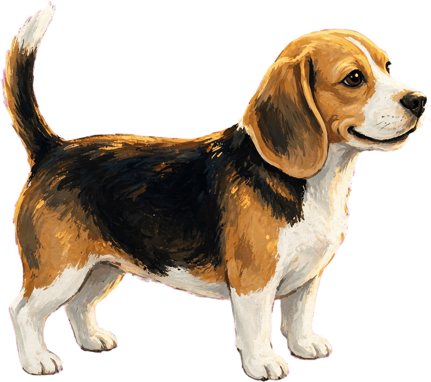
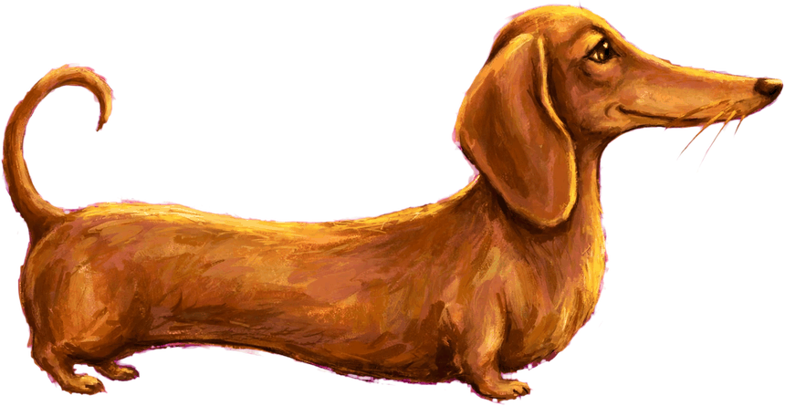
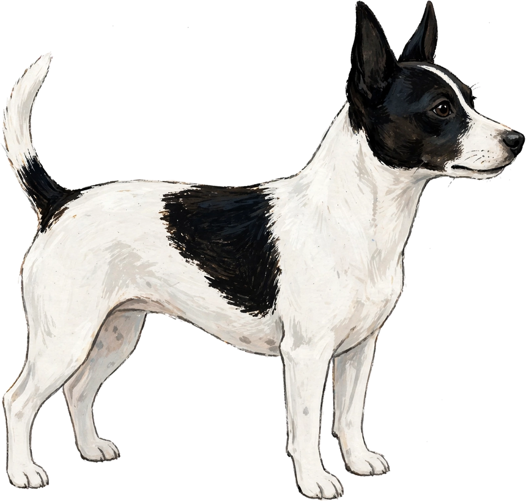
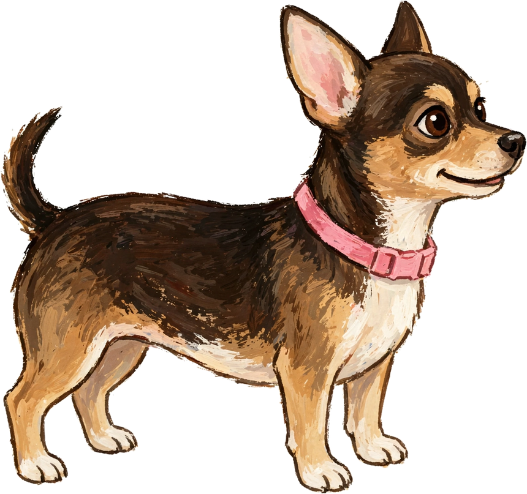

The family
Meet our dogs
Vizsla is named for a dog, so it seemed only fair the system have some. Rusty, Bagel, and Frank are the cast of the Vizsla Arcade — the same three faces in every game. And Mandy and Lola are the real dogs who own the house the system was built in.
The gang are not decorations pasted onto the games. In this house, personality is a mechanic: what a dog is like decides what a dog does. The fast one gets the racing games. The one who follows his nose gets the scent trails. The long one gets to be the snake. Once a dog is cast, he stays cast — no one-off critters, no renaming per game. These are the dogs.
Vizsla · the lead
Rusty
All heart, all velocity.
Rusty is the velcro-hearted speedster. Vizslas are hunting dogs who point at what they find and then stick close to their people — “velcro dog” is the breed’s nickname, and Rusty has earned it. He leads every charge and feels every feeling at full volume. Speed is his mechanic and heart is his difficulty setting: he goes fast because he cares, and he cares about everything, immediately, all at once.
Where you’ll meet him: the pup in Barrel Climb, the thrower in Kibble Cure, the launcher at the heart of Marble Mayhem, the star of Rusty Glides, and on his porch in Swat Team, defending the lemonade. His pinball table is called Midnight Motorcycle, which tells you most of what else there is to know.

Beagle · the nose
Bagel
A nose with a dog attached.
Bagel follows scent the way other dogs follow instructions — which is to say, the scent usually wins. It is most often snacks. His nose is not a character trait pasted on for charm; it is literally how his games work. In Scent Run, the scent trails are his user interface. In Bagel Slice, he is the one who can tell a ripe melon from a flea bomb. And when he finds something, he bays about it. All of it. At length. You will know.
Where you’ll meet him: Bagel Slice and Scent Run, racking the balls in Pocket Pool, DJing the Soul Train Yard pinball table, racing in Kart Yard, and — in the cast’s one sanctioned costume — in full painted scuba gear in Shark Supper.

Dachshund · the low-rider
Frank
He digs under every problem, then naps on top of the solution.
Frank is the low-rider: a dog built close to the ground and long as the day is, with a digger’s instincts and a philosopher’s pace. Length is his mechanic — the snake game in the arcade was always a dachshund, and we just admitted it. Put him in traffic and it is comedy with stakes. Give him a leaf-blower and a jetpack and a garden will never know peace again. Then, whatever happened, he naps on it.
Where you’ll meet him: Long Dog, Jetpack Frank, Endless Hopper, snoozing on the rail in Pocket Pool, and drafting in Kart Yard like he was born long — because he was.
The dogs who own the house
The gang works in the games. These two work the house. Everything in Vizsla was built, tested, and occasionally sat on under their management — and the newest of them arrived the way half the good things in this project did: unplanned, and then immediately permanent.

Rat Terrier · the original
Mandy
The supervisor.
Mandy was here first. She is a Rat Terrier in Leesburg, Florida — a real dog with a real dog’s job: supervising the humans while they build a whole operating system named after a different breed of dog, which she has decided to allow. Every app in Vizsla was tested in her house, on her schedule, around her naps. She has strong opinions about none of this and supervises anyway.
Where you’ll meet her: in Leesburg, on the good chair, keeping an eye on the proceedings. The gang may get the games, but they work for her.

Found in the back yard · the newest
Lola
A tenth of Mandy’s size, and the boss anyway.
Lola’s arrival was not dignified: somebody dumped her in the back yard in the fall of 2026, and the house rescued her. Then it turned out her first family lives right across the street. When they saw her again — fed, collared in pink, and plainly adored — they did the generous thing, and let her stay where she had landed. She was chosen twice: once by accident, and once on purpose.
She is very small. This has not slowed her down. Lola beats up Mandy — a dog ten times her size — and has otherwise taken over the house at ankle height, enormous ears and all. She wants to play. That remains most of her platform.
Where you’ll meet her: wherever the people are, ideally mid-game. She is the newest dog in the house and, as of this page, an official one.